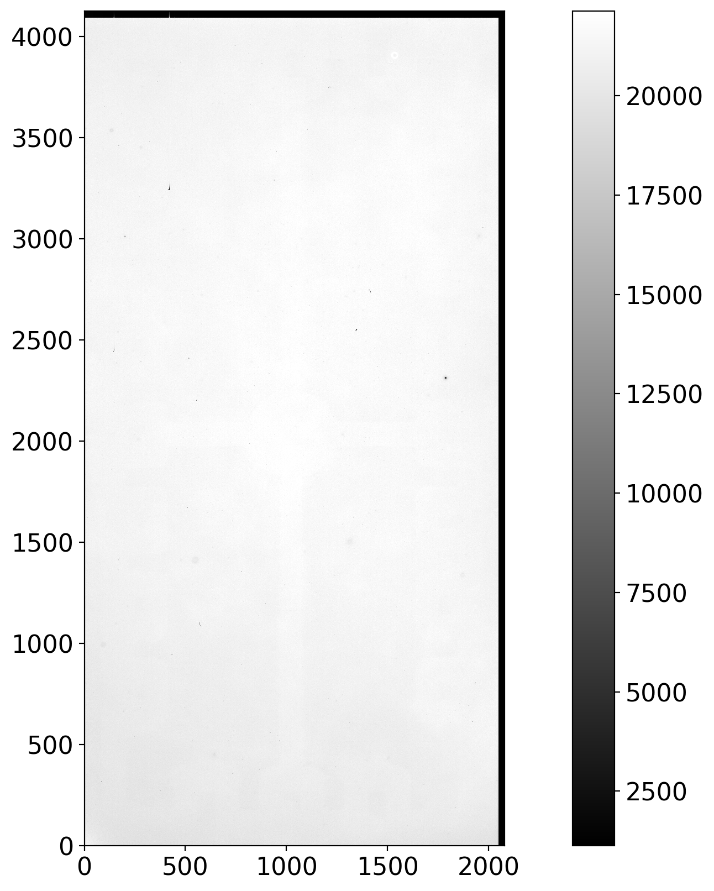
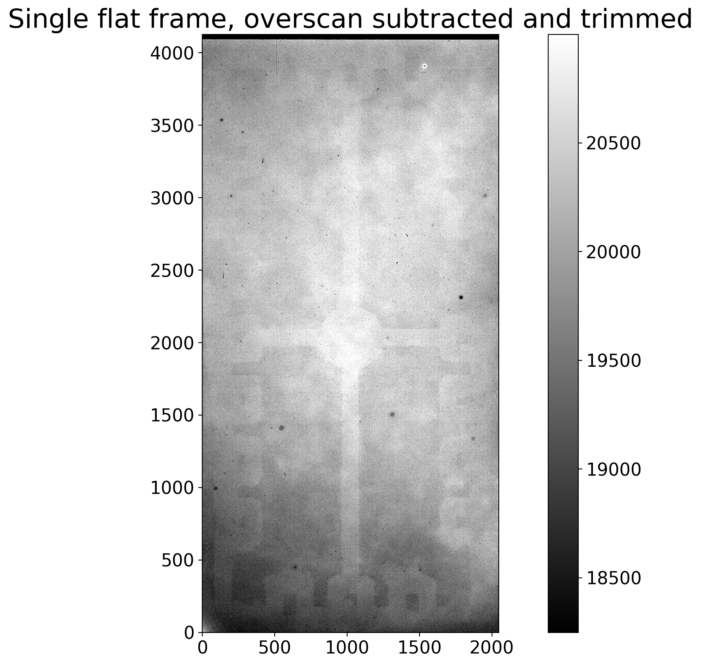
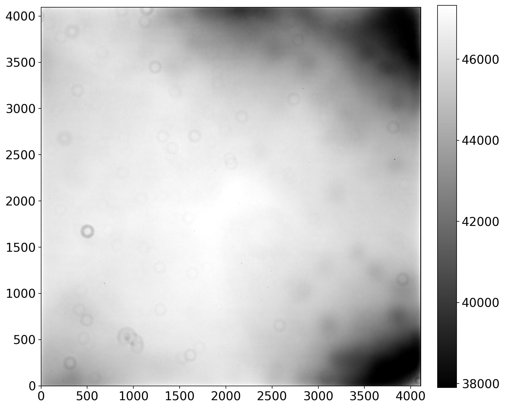
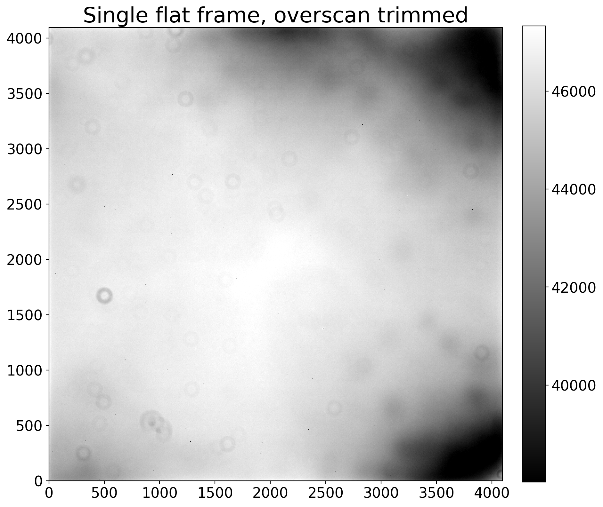
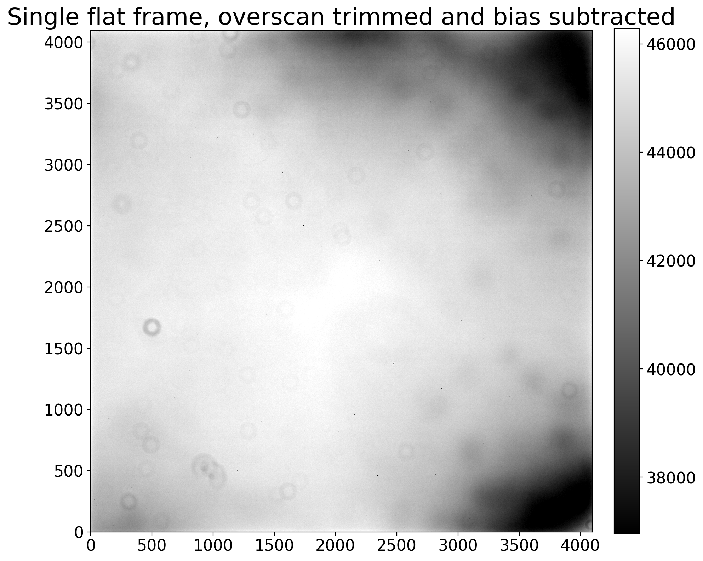
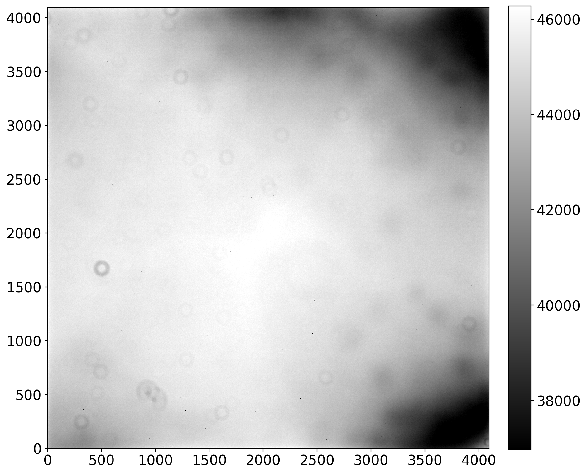

Calibrating the flats
Recall that the counts in an astronomical image include dark current, noise, and a near-constant offset, the bias. The individual flat frames need to have bias and dark removed from them. Depending on the exposure times of the images you have, you may or may not need to subtract dark and bias separately.
If the combined dark frame needs to be scaled to a different exposure time, then bias and dark must be handled separately; otherwise, the dark and bias can be removed in a single step because dark frames also include bias.
The potential reduction steps for flat frames are below:
- Subtract overscan and trim, if necessary.
- Subtract bias, if necessary.
- Subtract dark current, scaling if necessary (scale down when possible).
As in the chapters about bias and dark we will work through two examples. In Example 1 the darks are not scaled and the overscan region is used as part of the calibration. In Example 2 the darks are scaled and the overscan region is trimmed off without being used.
Function definition
Click here to comment on this section on GitHub (opens in new tab).
The function below finds the nearest dark exposure time to the exposure time of
a given image. An exception is raised if the difference in exposure time is
larger than tolerance, unless tolerance is set to None. A small numerical
tolerance is most useful if you anticipate not scaling the dark frames and
finding a dark exposure time close to the time of the image. Disregarding the
tolerance is useful if the intent is to scale the dark frames anyway.
def find_nearest_dark_exposure(image, dark_exposure_times, tolerance=0.5):
"""
Find the nearest exposure time of a dark frame to the exposure time of the image,
raising an error if the difference in exposure time is more than tolerance.
Parameters
----------
image : astropy.nddata.CCDData
Image for which a matching dark is needed.
dark_exposure_times : list
Exposure times for which there are darks.
tolerance : float or ``None``, optional
Maximum difference, in seconds, between the image and the closest dark. Set
to ``None`` to skip the tolerance test.
Returns
-------
float
Closest dark exposure time to the image.
"""
dark_exposures = np.array(list(dark_exposure_times))
idx = np.argmin(np.abs(dark_exposures - image.header['exptime']))
closest_dark_exposure = dark_exposures[idx]
if (tolerance is not None and
np.abs(image.header['exptime'] - closest_dark_exposure) > tolerance):
raise RuntimeError('Closest dark exposure time is {} for flat of exposure '
'time {}.'.format(closest_dark_exposure, a_flat.header['exptime']))
return closest_dark_exposure
from pathlib import Path
from astropy import units as u
from astropy.nddata import CCDData
import ccdproc as ccdp
from matplotlib import pyplot as plt
import numpy as np
from convenience_functions import show_image
# Use custom style for larger fonts and figures
plt.style.use('guide.mplstyle')
Example 1: No scaling of dark frames
Click here to comment on this section on GitHub (opens in new tab).
The images for this example are from chip 0 of the Large Format Camera at
Palomar Observatory. The raw images are at XXX, and this notebook assumes that
you have worked through the notebooks on bias and dark so that there is a folder
called example1-reduced in the same folder as this notebook.
We’ll go through this example twice: once with a single image to explain each step, and then again to process all of the flat frames in the directory of raw data.
An image collection is defined below, along with a couple of settings useful for this example.
reduced_path = Path('example1-reduced')
ifc_reduced = ccdp.ImageFileCollection(reduced_path)
combined_dark_files = ifc_reduced.files_filtered(imagetyp='dark', combined=True)
flat_image_type = 'FLATFIELD'
The raw data should be in the directory example-cryo-LFC.
raw_data = Path('example-cryo-LFC')
ifc_raw = ccdp.ImageFileCollection(raw_data)
The cell below checks that the files needed are available.
n_combined_dark = len(combined_dark_files)
expected_exposure_times = set([7, 70, 300])
if n_combined_dark < 3:
raise RuntimeError('One or more combined dark is missing. Please re-run the dark notebook.')
elif n_combined_dark > 3:
raise RuntimeError('There are more combined dark frames than expected.')
actual_exposure_times = set(h['exptime'] for h in ifc_reduced.headers(imagetyp='dark', combined=True))
if (expected_exposure_times - actual_exposure_times):
raise RuntimeError('Encountered unexpected exposure time in combined darks. '
'The unexpected times are {}'.format(actual_exposure_times - expected_exposure_times))
First, get one of the flat frames as a CCDData object and display it.
a_flat = CCDData.read(ifc_raw.files_filtered(imagetyp='flatfield', include_path=True)[0], unit='adu')
show_image(a_flat, cmap='gray')

There is not a lot of variation in this. Note that the overscan region on the right stands out as a black bar, and there is apparently also an overscan region across the top of the chip. There appears to be a slight variation in pixel values from the bottom to the top of the image.
Subtract overscan and trim, if necessary
Click here to comment on this section on GitHub (opens in new tab).
The overscan is useful for the LFC and needs to be subtracted and trimmed off.
See this example in the dark reduction notebook for a review of the overscan parameters.
The overscan region is the Python slice [:, 2055:] while the region to be
retained after trimming is the Python slice [:, :2048].
# Subtract the overscan
a_flat_reduced = ccdp.subtract_overscan(a_flat, overscan=a_flat[:, 2055:], median=True)
# Trim the overscan
a_flat_reduced = ccdp.trim_image(a_flat_reduced[:, :2048])
# Display the result so far
show_image(a_flat_reduced, cmap='gray')
plt.title('Single flat frame, overscan subtracted and trimmed')
Text(0.5, 1.0, 'Single flat frame, overscan subtracted and trimmed')

Trimming off the overscan makes such a big difference primarily because the image stretch changed; the lowest pixel values are now around 18000 instead of
- With that change, the nonuniformity across the detector is much clearer.
Subtracting bias is not necessary in this example
Click here to comment on this section on GitHub (opens in new tab).
For this particular set of images there are darks with exposure time 7, 70, and 300 sec. The flat images have the exposure times listed below:
set(ifc_raw.summary['exptime'][ifc_raw.summary['imagetyp'] == 'FLATFIELD'])
{7.0, 70.001, 70.011}
These are close enough to the exposure time of the dark frames that there is no need to scale the darks by exposure time. If the darks are not going to be scaled then there is no need to subtract the bias.
Subtract dark current, no scaling necessary in this example
Click here to comment on this section on GitHub (opens in new tab).
We need to subtract the dark without scaling it. Rather than manually figuring out which dark to subtract, we use the dark frame closest in exposure time to the flat, within a tolerance of 1 second to ensure that we do not end up using a dark too far off in exposure time from the flat.
First, find the dark exposure time closest to the flat. We will need to do this again later in the notebook, so we define a function to do it.
closest_dark = find_nearest_dark_exposure(a_flat_reduced, actual_exposure_times)
It will be convenient to be able to access the darks via a dictionary whose key is the exposure time, so we set that up below.
combined_darks = {ccd.header['exptime']: ccd for ccd in ifc_reduced.ccds(imagetyp='dark', combined=True)}
Next, we subtract the dark from the flat and display the result.
a_flat_reduced = ccdp.subtract_dark(a_flat_reduced, combined_darks[closest_dark],
exposure_time='exptime', exposure_unit=u.second, scale=False)
show_image(a_flat_reduced, cmap='gray')

There is not much change here; that is not surprising since the dark current in this camera is low.
Calibrate all of the flats in the folder
The cell below calibrates each of the flats in the folder, automatically grabbing the correct combined dark for each flat.
for ccd, file_name in ifc_raw.ccds(imagetyp='FLATFIELD', # Just get the bias frames
ccd_kwargs={'unit': 'adu'}, # CCDData requires a unit for the image if
# it is not in the header
return_fname=True # Provide the file name too.
):
# Subtract the overscan
ccd = ccdp.subtract_overscan(ccd, overscan=ccd[:, 2055:], median=True)
# Trim the overscan
ccd = ccdp.trim_image(ccd[:, :2048])
# Find the correct dark exposure
closest_dark = find_nearest_dark_exposure(ccd, actual_exposure_times)
# Subtract the dark current
ccd = ccdp.subtract_dark(ccd, combined_darks[closest_dark],
exposure_time='exptime', exposure_unit=u.second)
# Save the result; there are some duplicate file names so pre-pend "flat"
ccd.write(reduced_path / ('flat-' + file_name))
Example 2: Dark frames are scaled
Click here to comment on this section on GitHub (opens in new tab).
The images in this example, like in the previous notebooks, is a thermoelectrically-cooled CCD described in more detail in the overscan notebook.
We’ll go through this example twice: once with a single image to explain each step, and then again to process all of the flat frames in the directory of raw data.
An image collection is defined below, along with a couple of settings useful for this example.
reduced_path = Path('example2-reduced')
ifc_reduced = ccdp.ImageFileCollection(reduced_path)
combined_dark_files = ifc_reduced.files_filtered(imagetyp='dark', combined=True)
flat_image_type = 'FLAT'
The raw data should be in the directory example-thermo-electric.
raw_data = Path('example-thermo-electric')
ifc_raw = ccdp.ImageFileCollection(raw_data)
The cell below checks that the files needed are available.
n_combined_dark = len(combined_dark_files)
n_dark_expected = 1
expected_exposure_times = set([90])
if n_combined_dark < n_dark_expected:
raise RuntimeError('One or more combined dark is missing. Please re-run the dark notebook.')
elif n_combined_dark > n_dark_expected:
raise RuntimeError('There are more combined dark frames than expected.')
actual_exposure_times = set(h['exptime'] for h in ifc_reduced.headers(imagetyp='dark', combined=True))
if (expected_exposure_times - actual_exposure_times):
raise RuntimeError('Encountered unexpected exposure time in combined darks. '
'The unexpected times are {}'.format(actual_exposure_times - expected_exposure_times))
First, get one of the flat frames as a CCDData object and display it.
a_flat = CCDData.read(ifc_raw.files_filtered(imagetyp='flat', include_path=True)[0], unit='adu')
show_image(a_flat, cmap='gray')
INFO: using the unit adu passed to the FITS reader instead of the unit adu in the FITS file. [astropy.nddata.ccddata]

There is a much different pattern of variation across the sensor in this case than in Example 1. The multiple “donuts” in the image are pieces of dust and there is significant vignetting (darkening) in the top and bottom corners of the image on the right side.
Subtract overscan and trim: only trim for this camera
Click here to comment on this section on GitHub (opens in new tab).
The overscan is not useful for this camera. The region to be retained after
trimming is the Python slice [:, :4096].
# Trim the overscan
a_flat_reduced = ccdp.trim_image(a_flat[:, :4096])
# Display the result so far
show_image(a_flat_reduced, cmap='gray')
plt.title('Single flat frame, overscan trimmed')
Text(0.5, 1.0, 'Single flat frame, overscan trimmed')

Trimming off the overscan did not make a big difference primarily because the overscan region of this camera is not useful. A useful overscan would have had values around the bias level for this camera, about 1200 counts. The image stretch did change a bit; prior to trimming the lower end of the color scale was 38000 and now it is 40000.
Subtracting bias is necessary
Click here to comment on this section on GitHub (opens in new tab).
For this particular set of images there is a combined dark with exposure time 90 sec. The flat images have the exposure times listed below:
set(ifc_raw.summary['exptime'][ifc_raw.summary['imagetyp'] == 'FLAT'])
{1.0, 1.02, 1.06, 1.11, 1.16, 1.21}
These are quite different than the exposure time of the dark frames, so the dark will need to be scaled by exposure time, which means that the bias has been removed from the combined dark.
Because of that, the bias needs to be removed from the flat before subtracting the dark.
combined_bias = list(ifc_reduced.ccds(combined=True, imagetyp='bias'))[0]
a_flat_reduced = ccdp.subtract_bias(a_flat_reduced, combined_bias)
# Display the result so far
show_image(a_flat_reduced, cmap='gray')
plt.title('Single flat frame, overscan trimmed and bias subtracted');

Except for a change in the image scale shown on the color bar there isn’t much visually different after subtracting the bias.
Subtract dark current, scaling as needed
Click here to comment on this section on GitHub (opens in new tab).
Here we will need to scale the dark from the 90 sec exposure time of the dark
frame to the exposure time of each flat image. The ccdproc function
subtract_dark provides keywords for doing this scaling automatically.
closest_dark = find_nearest_dark_exposure(a_flat_reduced, actual_exposure_times, tolerance=100)
It will be convenient to be able to access the darks via a dictionary whose key is the exposure time, so we set that up below.
combined_darks = {ccd.header['exptime']: ccd for ccd in ifc_reduced.ccds(imagetyp='dark', combined=True)}
combined_darks
{90.0: CCDData([[ 6.8, 49.7, 39.4, ..., 5.6, 6. , 1.9],
[ 3. , 55.3, 33.3, ..., 7.9, -3.3, 4.6],
[ -2.4, 49.5, 36.5, ..., 8.4, 4.5, 8.7],
...,
[ 2.7, 5.9, 9.4, ..., -1.8, 7.5, 2.7],
[ 0.4, 13.4, 7.4, ..., -0.7, 12. , -3.3],
[ 0.1, -11.7, 3.1, ..., -0.9, 2.6, 4.5]])}
Next, we subtract the dark from the flat and display the result.
a_flat_reduced = ccdp.subtract_dark(a_flat_reduced, combined_darks[closest_dark],
exposure_time='exptime', exposure_unit=u.second, scale=True)
show_image(a_flat_reduced, cmap='gray')

There is not much change here; that is not surprising since the dark current in this camera is low.
Calibrate all of the flats in the folder
The cell below calibrates each of the flats in the folder, automatically grabbing the correct combined dark for each flat.
for ccd, file_name in ifc_raw.ccds(imagetyp='FLAT', # Just get the bias frames
return_fname=True # Provide the file name too.
):
# Trim the overscan
ccd = ccdp.trim_image(ccd[:, :4096])
# Find the correct dark exposure
closest_dark = find_nearest_dark_exposure(ccd, actual_exposure_times, tolerance=100)
# Subtract the dark current
ccd = ccdp.subtract_dark(ccd, combined_darks[closest_dark],
exposure_time='exptime', exposure_unit=u.second, scale=True)
# Save the result
ccd.write(reduced_path / file_name)